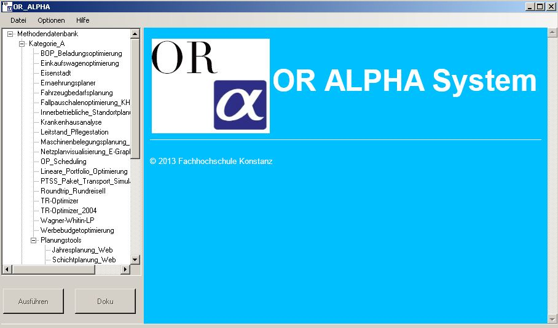
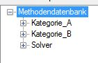
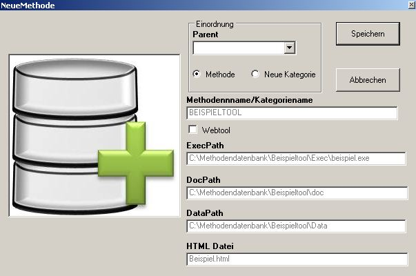

Nachstehend finden Sie eine Dokumentation über das neue Framework "OR-Alpha".
In dieser sollen alle Funktionalitäten
sowie die neuen Features kurz aufgezeigt und erklärt werden.
Auf der unten stehenden Grafik ist das Neue Framework OR-Alpha zu sehen und nebenstehend dieser Grafik
sind die Erklärungen der einzelnen Bereiche zu finden.
|  |
|
| Durch klicken auf die Funktion "Aktualisieren wird die XML-Datei neu eingelesen, und somit die Treemap mit den Methoden aktualisiert. |
|
| Mit der Drucken Funktion wird die HTML-Seite der aktuell ausgewählten Methode gedruckt. |
|
| Die Neustart-Funktion startet das komplette OR-Alpha-Framework neu. |
| Mit dieser Funktion können neue Methoden in das Framework OR-Alpha aufgenommen werden. Dazu später mehr. Nach benutzung dieser Funktion sollte ein Neustart des Frameworks OR-Alpha durchgeführt werden. |
|
| Unter dieser Funktion wird der aktuelle Pfad zu dem XML-File gesetzt. Nach Benutzung dieser Funktion sollte ein Neustart des Frameworks OR-Alpha durchgeführt werden. |
|
| Unter dieser Funktion wird der Pfad zu den HTML-Dateien gesetzt. Nach Benutzung dieser Funktion sollte ein Neustart des Frameworks OR-Alpha durchgeführt werden. |
|
| Unter dieser Funktion wird der Name der Platzhalter HTML-Seite gesetzt.(für Methoden die unter Bearbeitung stehen). Nach benutzung dieser Funktion sollte ein Neustart des Frameworks OR-Alpha durchgeführt werden. |
| Diese Funktion ruft diese Seite auf :P "Saka ya" |
|
| Öffnet ein neues Fenster mit Informationen über die Copyright-Rechte, Version und die Entwickler. |
|  | In der TreeMap "Methodendatenbank" sind 3 Kategorien zu Finden:
|
|  |
|
Das Framework OR-Alpha enstand im Rahmen eines Teamprojekts im Sommersemester 2013 unter der Leitung des Herrn Prof. Dr. Grütz. Das Framework befindet sich in ständiger Überarbeitung. Bei Fragen oder Verbesserungsvorschlägen wenden Sie sich bitte an den Professor der "Operations Research" Vorlesung.
DONE !
© 2013 Fachhochschule Konstanz